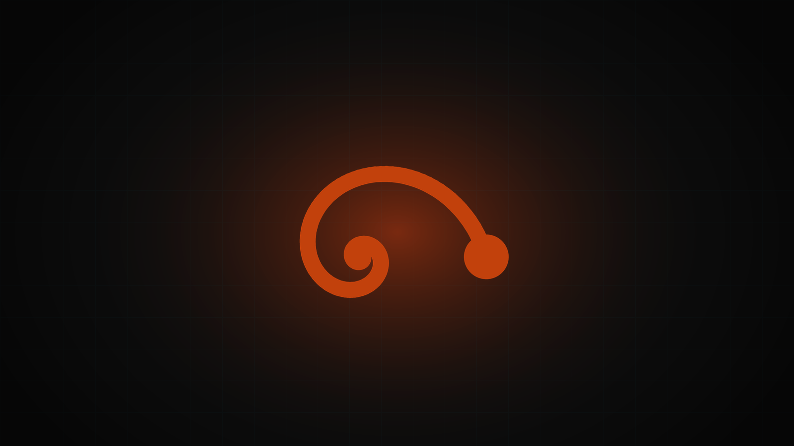
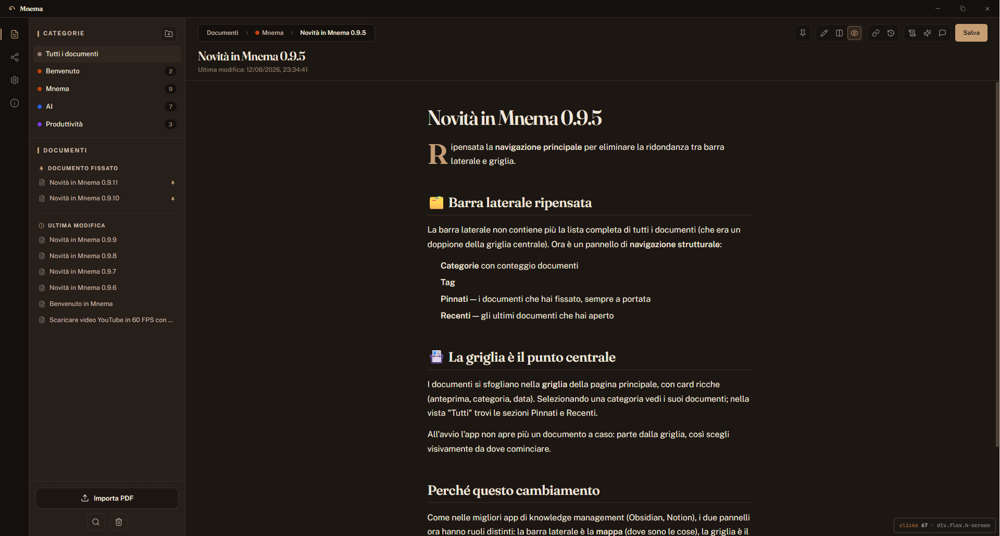
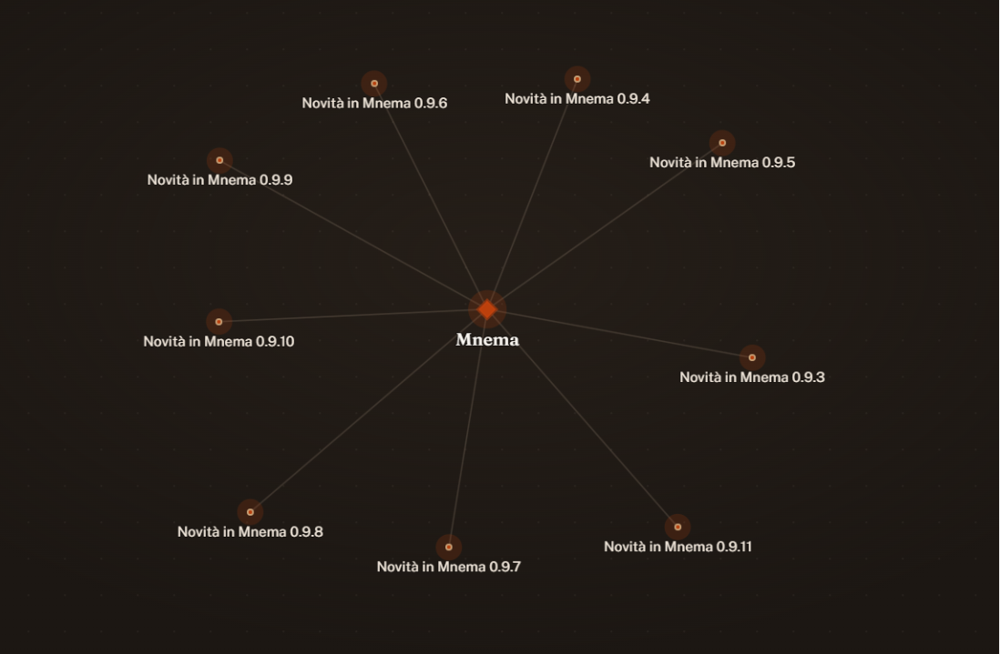
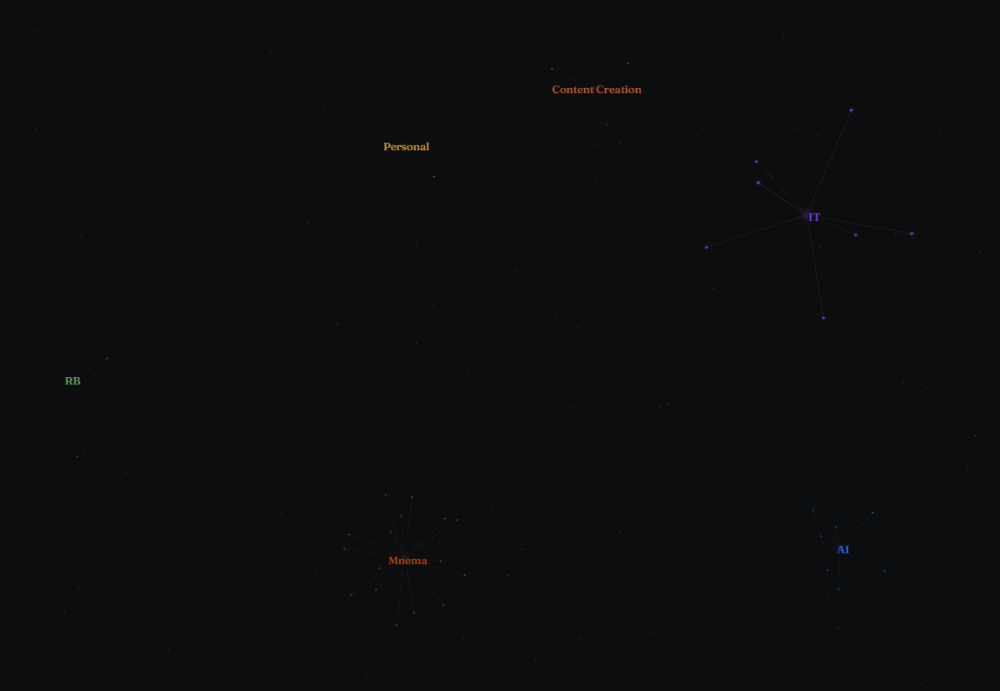
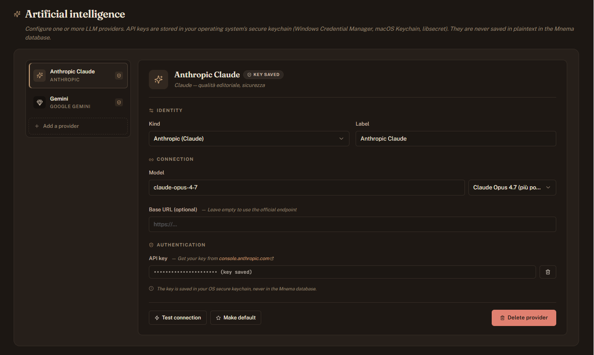

Markdown editor
Write documentation in markdown with a clean, focused editing surface.
App · Desktop
A desktop personal knowledge management tool: a markdown editor wrapped around a living graph of the links between your documents — in 2D and 3D — with built-in LLM assistance and versioning.

01 — Overview
Mnema is a desktop application for personal documentation: a place to write, connect and revisit knowledge. It pairs a markdown editor with a graph of the links between documents, rendered both as a 2D map and as a navigable 3D space, and adds an LLM layer and versioning on top.
The name comes from ancient Greek μνῆμα (mnêma) — "a memorial, that which is remembered." The app is built around that idea: not just storing notes, but keeping the relationships between them visible and alive.
02 — Features
Write documentation in markdown with a clean, focused editing surface.
See the connections between documents as an interactive graph — Cytoscape.js for 2D, a force-directed Three.js scene for 3D.
Local models via Ollama, plus external providers: Anthropic (Claude), OpenAI (GPT), Google (Gemini) and any OpenAI-compatible endpoint.
Everything lives in a local SQLite database with a custom incremental migration system.
Pulls text out of PDFs with the Rust pdf-extract crate, silencing its ligature noise.
Document history is tracked, so you can see how a note evolved over time.
03 — Under the hood
| Layer | Technologies |
|---|---|
| Runtime / build | Tauri 2, React 18, TypeScript, Vite, Tokio (rt-multi-thread) |
| UI | Tailwind CSS, Zustand (state), Lucide icons, custom SVG icons |
| Graph | Cytoscape.js (2D), 3d-force-graph + Three.js (3D) |
| Data | SQLite with a custom incremental migration system |
| LLM | Ollama (local) + external providers: Anthropic (Claude), OpenAI (GPT), Google (Gemini), OpenAI-compatible |
pdf-extract (Rust) with a StderrSilencer for ligature spam | |
| External links | tauri-plugin-opener |
| Dev environment | Windows — launched via npm run tauri:dev |
04 — Gallery



